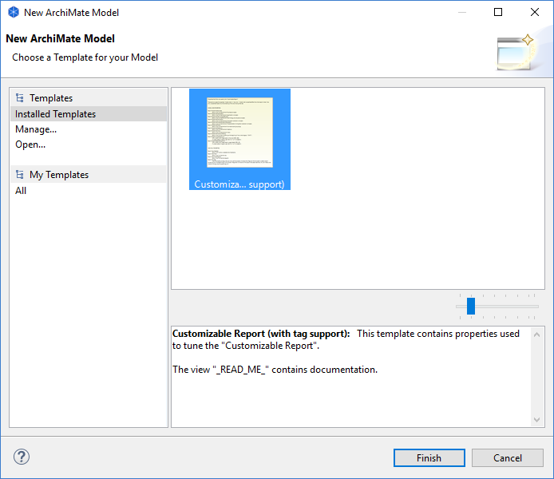

管理您的模板
您将模板作为“*.architemplate”文件存储在文件系统中。这些可以存储在本地文件系统的任何地方。Archi 允许您创建指向这些模板的用户集合。这些是实际模板的快捷方式。要管理您的模板集合，请按以下步骤操作：
- 从主菜单中选择“文件->新建->来自模板的模型...”菜单项。将打开一个向导：

- 从向导左侧的“模板”部分中选择“管理...”。将打开一个对话窗口：
- 此对话框允许您添加、重命名和删除新模板类别，还可以将模板从文件添加到您的收藏。您还可以编辑和更改每个模板的名称和说明。
- 要从文件中添加模板，请单击“添加模板...”按钮。从出现的文件对话框中选择“*.architemplate”文件。
- 要添加新的模板类别，请单击“新建类别...”按钮。提供类别的名称。
- 要将模板添加到类别，请将模板条目从“模板”表拖放到“类别”树中的类别文件夹中。请注意，一个模板可以出现在多个类别文件夹中。